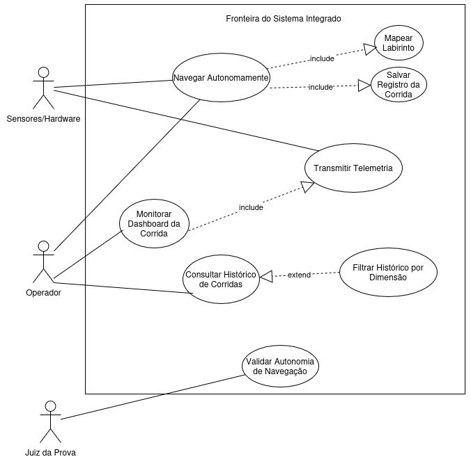

Diagrama de Casos de Uso (UML)
Este documento mapeia os requisitos funcionais do projeto Micromouse sob a perspectiva de Casos de Uso, delimitando as fronteiras do sistema, identificando os atores envolvidos e explicitando as interações primárias. A finalidade do artefato é viabilizar a rastreabilidade entre as histórias de usuário e as funcionalidades do sistema, servindo de referência para o desenvolvimento e para a validação por meio dos casos de teste.
Fronteiras do Sistema
O sistema integrado estrutura-se em duas camadas lógicas que operam de modo articulado. O firmware embarcado no Micromouse responde pela navegação, pela detecção física do ambiente e pela transmissão dos dados brutos por meio de rede local com protocolo WebSocket. O sistema web (composto por backend FastAPI e frontend) recebe, processa, exibe em tempo real e persiste os dados de telemetria no SQLite.
Atores do Sistema
Os atores representam entidades externas (humanas ou de hardware) que interagem com o sistema, seja fornecendo informações, seja consumindo seus resultados.
| Ator | Tipo | Descrição |
|---|---|---|
| Operador | Humano (primário) | Inicializa o robô no labirinto, monitora o dashboard web em tempo real e consulta o histórico de desempenho |
| Juiz da Prova | Humano (primário) | Valida os critérios da competição, assegurando que o robô conclui o percurso sem intervenção de controle externo |
| Sensores e Hardware | Sistema externo (secundário) | Módulos físicos (sensores infravermelhos/ultrassônicos, encoders, bateria) que fornecem os dados do mundo real ao firmware |
Casos de Uso Mapeados
A nomenclatura dos casos de uso adota verbos no infinitivo, refletindo as ações diretas mapeadas a partir do backlog funcional priorizado pelo método MoSCoW. Os casos foram agrupados em dois módulos, conforme a natureza das funcionalidades.
Módulo de Navegação e Telemetria (Firmware)
O UC01: Navegar Autonomamente representa o controle dos motores e a correção da trajetória via PID para evitar colisões, cobrindo US01, US02, US05 e US07. O UC02: Mapear Labirinto consolida o registro das coordenadas e das paredes detectadas, bem como a identificação da sala central (US03 e US04). O UC03: Transmitir Telemetria explicita o envio contínuo dos dados de trajeto, bateria, velocidade e status (US08 e US09).
Módulo de Monitoramento e Persistência (Sistema Web)
O UC04: Monitorar Dashboard da Corrida permite ao operador visualizar a renderização do mapa, o cronômetro, a velocidade média e o nível de bateria em tempo real, abrangendo US10, US11 e US12. O UC05: Salvar Registro da Corrida consolida a gravação dos dados no banco SQLite ao término do percurso (US13). O UC06: Consultar Histórico de Corridas viabiliza a visualização dos logs armazenados (US14), enquanto o UC07: Filtrar Histórico por Dimensão refina a consulta por tamanho de labirinto (4x4, 8x8 ou 16x16), também relacionado a US14. Por fim, o UC08: Validar Autonomia de Navegação representa a verificação, pelo juiz da prova, de que o sistema ignorou comandos externos de direção (US06).
Relacionamentos Estruturais
A estruturação do diagrama nas ferramentas de modelagem (Draw.io, Lucidchart ou Astah) requer a aplicação de relacionamentos <<include>> e <<extend>> entre os casos de uso. A navegação autônoma (UC01) inclui obrigatoriamente o mapeamento do labirinto (UC02), uma vez que a navegação eficaz neste projeto depende do mapeamento simultâneo do espaço. O monitoramento do dashboard (UC04) inclui a transmissão de telemetria (UC03), pois o painel web depende da recepção ativa dos dados produzidos pelo firmware. A conclusão do percurso pela navegação (UC01) inclui a persistência do registro da corrida (UC05), assegurando o armazenamento dos dados de desempenho. Por sua vez, o filtro por dimensão (UC07) estende a consulta ao histórico (UC06), por se tratar de ação opcional executada a critério do operador.
Representação Textual do Diagrama
A representação textual a seguir consolida atores, casos de uso e relacionamentos em formato compatível com ferramentas de modelagem baseadas em código.
flowchart LR
A_Operador(Operador)
A_Juiz(Juiz da Prova)
A_Hardware(Sensores/Hardware)
subgraph Fronteira [Fronteira do Sistema Integrado]
UC01(Navegar Autonomamente)
UC02(Mapear Labirinto)
UC03(Transmitir Telemetria)
UC04(Monitorar Dashboard da Corrida)
UC05(Salvar Registro da Corrida)
UC06(Consultar Histórico de Corridas)
UC07(Filtrar Histórico por Dimensão)
UC08(Validar Autonomia de Navegação)
end
A_Operador --> UC01
A_Operador --> UC04
A_Operador --> UC06
A_Hardware --> UC01
A_Hardware --> UC03
A_Juiz --> UC08
UC01 -.->|include| UC02
UC01 -.->|include| UC05
UC04 -.->|include| UC03
UC07 -.->|extend| UC06Diagrama UML de Casos de Uso

Histórico de versões
| Versão | Data | Descrição | Autor(es) | Revisor(es) | Descrição da Revisão |
|---|---|---|---|---|---|
1.0 |
04/05/2026 | Criação do documento de descrição textual do Diagrama de Casos de Uso | Paulo Vitor | Eduardo Ferreira | |
1.1 |
05/05/2026 | Adição do Diagrama UML | Eduardo Ferreira | Pendente |